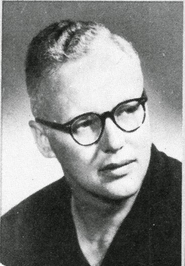

Forget the usual intros. I’m here to address something straightforward but often overlooked: people live unique
lives with insights and experiences worth sharing, yet many of these stories go unheard. For a long time, I assumed
the world didn’t care much about what individuals had to say unless they were already in the spotlight. But the more
I looked around, the more I realized the potential of everyday voices to shape new perspectives.
Imagine a platform—a place where anyone, regardless of background, can share what they’ve learned from life.
This isn’t about therapy or venting emotions; it’s about contributing real experiences that others might find useful,
thought-provoking, or inspiring. Just like Wikipedia, but filled with personal insights, lessons, and practical knowledge
from real people.
The goal? A community that thrives on shared wisdom and diverse perspectives. No one needs to be a professional or a
public figure to add something meaningful. Whether you choose to stay anonymous or not, every voice counts. Let’s build
a place where everyone can add to a collective bank of experiences that others can learn from and connect with.
Appearance
Adjust font size here:
Share Your Story
Join our community and express your thoughts and feelings in a safe environment.
Join the Community
Connect with others who understand and support you. Together, we grow stronger!
Get Inspired
Read stories from others, share experiences, and find motivation to express yourself.
Shirley Shiholm
On October 29, 1973, Shirley Chisholm made history by being sworn in as the first Black woman elected to the United States Congress.
Representing New York's 12th congressional district, she brought her passionate advocacy for marginalized communities to the forefront of American politics.
Throughout her tenure, Chisholm fought for issues such as education, healthcare, and civil rights, becoming a formidable voice against racism and sexism in politics.
Her groundbreaking election marked a significant milestone in the struggle for representation, inspiring future generations of women and people of color to pursue political
office and advocate for social justice.

John D.MacDonald
On October 29, 1969, John D. MacDonald published The Deep Blue Good-By, the first book in his celebrated Travis McGee series. This novel introduced readers to the character of Travis McGee,
a salvage consultant who resides on a houseboat in Fort Lauderdale, and set the tone for a series that would explore themes of morality, justice, and social issues. MacDonald, born on July 24, 1916,
in Sharon, Pennsylvania, was a prolific author who penned over 70 novels and numerous short stories throughout his career. His writing is characterized by engaging plots and a deep understanding of human
nature, making him a significant figure in the thriller genre. The Travis McGee series combined elements of mystery and adventure, while also providing social commentary on contemporary issues such as
consumerism and environmentalism. Although MacDonald was highly regarded by his peers and received several accolades, including the prestigious Edgar Award, he remains somewhat underappreciated in
mainstream literary discussions. His innovative approach to crime fiction and the creation of a compelling protagonist have left a lasting impact on the genre, influencing countless authors who
followed in his footsteps.
K. R. Narayanan
On October 29, 1949, K. R. Narayanan was born in Kerala, India, and later became the first Dalit President of India, serving from 1997 to 2002. Rising from humble beginnings,
he had a distinguished career in diplomacy and politics, including roles as India's Ambassador to the United States and Minister for External Affairs. Known for his commitment
to social justice and education, Narayanan advocated for the rights of marginalized communities and focused on national unity during his presidency. Though not widely recognized outside of India,
his legacy as a champion for equality and representation continues to inspire many.